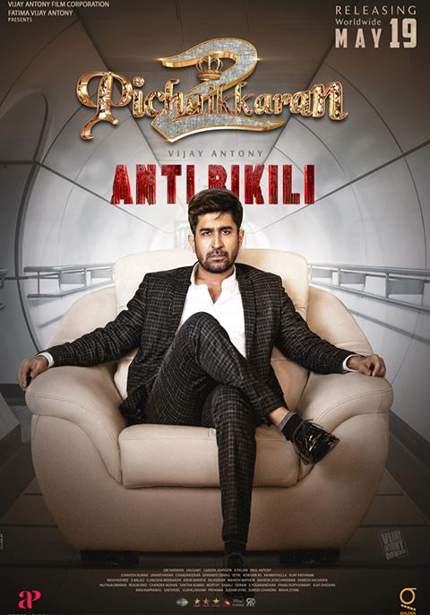

Pichaikkaran 2 Review: Sequel Fell Flat

Rating:⭐⭐1/2
Pichaikkaran 2: Anti Bikili, is a standalone sequel to the orginal Pichaikkaran, which was directed by Vijay Antony. There was so much
hype around this film, due to the craze over the original Pichaikkaran. Sadly though, this film was felt average. Same plot and storyline as the
original Pichaikkaran, but this time with charcter twists. Average music and BGM, didn't hit hard as the original Pichaikkaran. Overall, if you are
avid fan of Pichaikkaran, the sequel will disappoint you. Also what a coincidence that in the original Pichaikkaran that, the Indian govrnment decided
to remove 1000 rupee notes, and now in Pichaikkaran 2, the government decided to remove 2000 rupee notes.